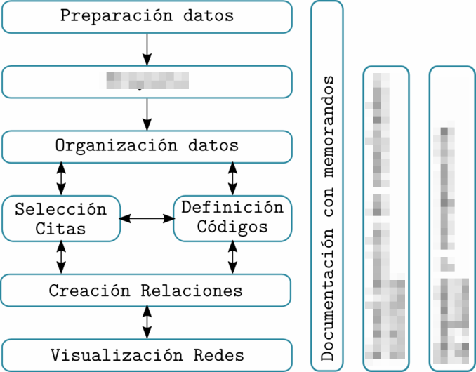
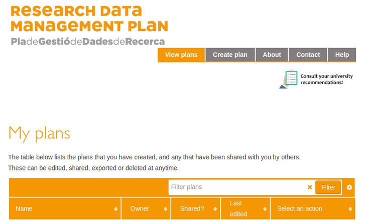
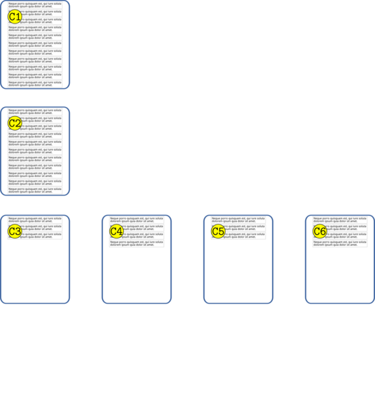
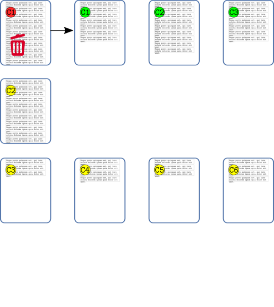
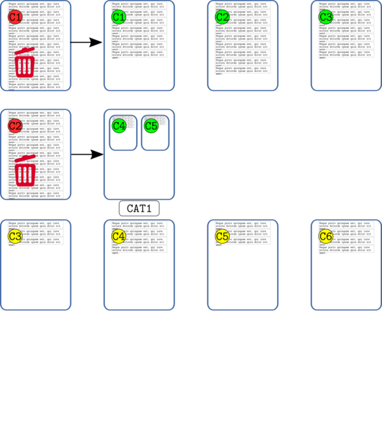
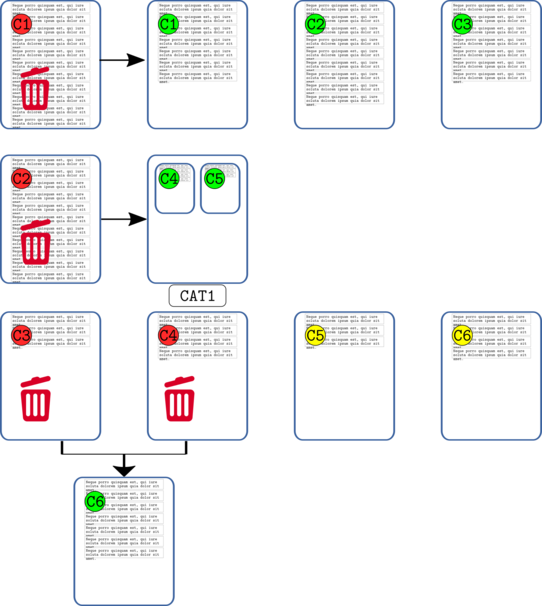
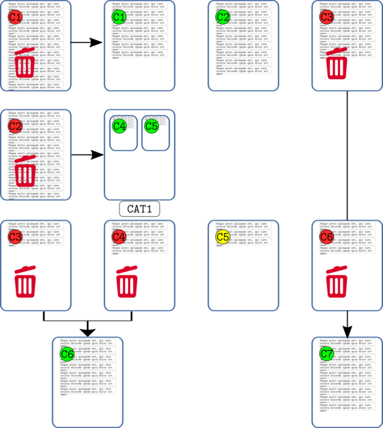
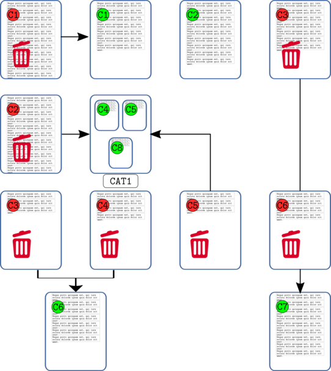
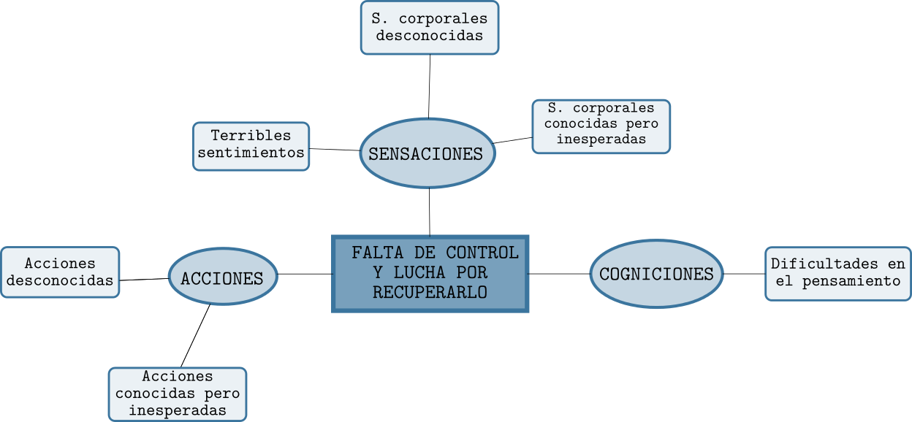
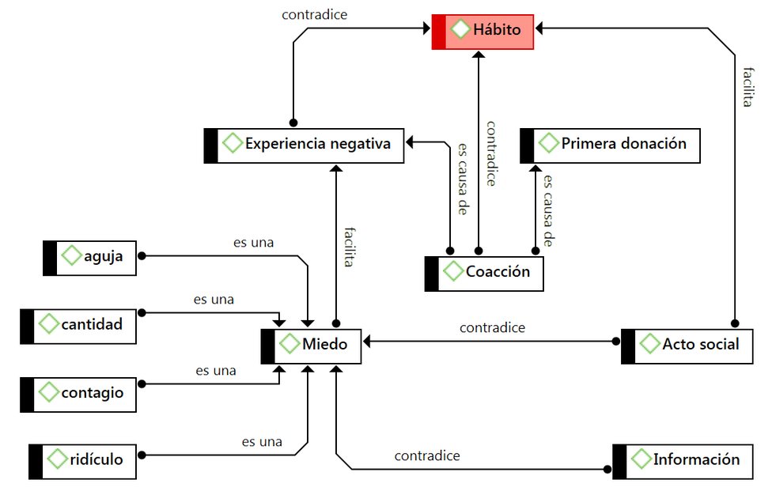

Análisis temático
Perspectivas discursivas en la Investigación Social
Juan Muñoz
Universitat Autònoma de Barcelona
http:/juan.psicologiasocial.eu

Contenidos
- Qué es
- Gestión de datos
- Memoing
- Codificación
Definiciones
Indefinición
(…) gran parte de los análisis presentados en artículos es esencialmente temático, pero se describe como algo distinto, como análisis de contenido, o simplemente no se identifica como un método particular.
Vaismoradi, Turunen, & Bondas (2013, p. 400)
La investigación cualitativa
Un enfoque cualitativo es uno en el que hay necesidad de interpretar los datos a través de la identificación y, posiblemente, la codificación de temas, conceptos, procesos, contextos, etc., con el fin de construir explicaciones o teorías o para probar o ampliar una teoría.
Lewins & Silver (2007)
Análisis de contenido
Una técnica de investigación para la descripción objetiva, sistemática y cuantitativa del contenido manifiesto de las comunicaciones con el fin de interpretarlas.
Berelson (1952, p. 18)
Análisis cualitativo de contenido
(…) un enfoque de análisis empírico, metodológicamente controlado, de textos en su contexto de comunicación, siguiendo reglas de análisis de contenido y modelos paso a paso, sin una cuantificación precipitada.
Mayring (2000, para. 5)
Análisis temático
El análisis temático es un método para identificar, analizar y reportar patrones (temas) dentro de los datos. Como mínimo organiza y describe en detalle el conjunto de datos. Sin embargo, con frecuencia, va más allá e interpreta diversos aspectos del tema de investigación.
Braun & Clarke (2006, p. 79)
Contenido - Temático

Manifiesto vs. latente
Fases del análisis

Preparación de datos
Fases preparación datos
- Transcripción (literal de los datos)
- Convenciones (“jeffersonianas”)
- Gestión (archivado, formato, control)
Transcribir: herramientas


Software
Soundscriber: http://www-personal.umich.edu/~ebreck/sscriber.html
https://otranscribe.com/
https://dictation.io/speech
Transcripción
(…) La producción y el uso de transcripciones son ‘actividades de investigación’ y no deben ser enfocadas como simplemente ‘detalles técnicos’ que preceden el análisis.
McLellan, MacQueen, & Neidig (2003, p. 64)
Transcripción y ¿realidad?
Cualquier persona que transcriba o trabaje con transcripciones debería ser consciente de que una transcripción nunca podrá representar una situación de entrevista en su totalidad. En la comunicación intervienen demasiados elementos y es imposible transcribirlos todos. Incluso una transcripción fonética ignora aspectos no verbales como el olor, configuración de espacio y tiempo, aspectos visuales, expresiones faciales y gestos.
Dresing (2015, p. 22)
¿Realidad?
Convenciones
En una conversación lo más significativo es lo que no se dice entre lo que se está diciendo, como por ejemplo las pausas y silencios, las entonaciones y los gestos, porque ahí radican los dobles significados, los ánimos y el objetivo mismo de la comunicación.
Fernández Christlieb (2004, p. 46)
Convenciones “jeffersonianas”

Jefferson (2004, p. 15) >
Ver también: Bassi Follari (2015)
Gestión de los datos
La inadecuada documentación y monitorización de las actividades relacionadas con los datos pueden amenazar su integridad. Además, las prácticas inadecuadas de seguimiento pueden dificultar el análisis y aumentar la probabilidad de un pandemónium de investigación.
McLellan et al. (2003, p. 69)
Ver: Processing Qualitative Data Files
http://www.fsd.uta.fi/aineistonhallinta/en/processing-qualitative-data-files.html
Ver: UK · Data Archive: Create & Manage Data
http://www.data-archive.ac.uk/create-manage
Plan de Gestión de Datos

Pla de Gestió de Dades de Recerca
https://dmp.csuc.cat
Control de versiones

Ejercicio: Gestión de datos

- Formato documentos
- Etiquetado archivos
- Sistema de control
- …
Y luego…


Memoing
Memoing
Vemos la toma de notas como crucial para todos los tipos y enfoques de análisis. Otras funciones, como la codificación, la búsqueda de texto, la codificación automática y la modelización pueden ser utilizadas por enfoques concretos, pero la anotación de los datos, documentos y material de apoyo es indivisible del análisis general.
Lewins & Silver (2007, p. 59)
Memoing = Reflexionar sobre…
- Relación con participantes y/o fenómeno
- Preguntas de investigación
- Elección de códigos y sus definiciones
- Categorías, temas y conceptos emergentes
- Posibles conexiones entre elementos
- Teoría emergente
- Problemas de cualquier tipo de nuestra investigación
- Problemas o dilemas éticos
- Informe final
Saldaña (2009, pp. 34–40)
Codificación
¿Cómo?


Ejemplo: códigos-categorías-temas
 Graneheim & Lundman (2004, p. 108)
Graneheim & Lundman (2004, p. 108)
Narrativas sobre hipoglucemia
Proceso de análisis
Reducción
[En la investigación cualitativa] el reto es dar sentido a una cantidad masiva de datos, reducir el volumen de información, identificar pautas significativas, y construir un marco para comunicar la esencia de lo que revelan los datos.
Patton (1990, pp. 371–372)

Comentarios de códigos
| Código | MARGPROB |
|---|---|
| Definición breve | Problemas propios de comunidades marginales |
| Definición completa | Situaciones sociales que son vividas exclusivamente por aquellas personas que llevan un estilo de vida marginal, con carencia fundamentalmente de bienes y servicios que sí están presentes en personas con nivel socioeconómico medio. |
| Cuándo se usa | Cuando las personas señalan alguna dificultad que denote un problema social instrumental, como falta de alimento, abrigo, techo, salud, servicios sanitarios. Debe tener carácter grave o impedir el desarrollo adecuado de su vida familiar, social o laboral. |
| Cuándo no se usa | No se aplica a problemas propios de una conducta condicionada por cultura marginal, como violencia doméstica, alcoholismo, abandono de hogar, delincuencia, prostitución |
| Ejemplo | “Como aquí no hay agua ni alcantarillado, la suciedad que hay aquí en las calles es terrible, ahí se puede ver… ¿se fija?, los niños se enferman a cada rato.” |
MacQueen, McLellan, & Milstein (1998)
Codificación: “Depuración”
Durante el desarrollo de un sistema de códigos y eventualmente temas, el investigador va en constante ir y venir entre la lectura de los datos, la relectura de los segmentos codificados, la organización de los códigos, el cambio de nombre y el reordenamiento de los códigos y la recodificación de los segmentos de datos.
Friese, Soratto, & Pires (2018, p. 17)
Comparación constante

Categorizar
Categorizar es tratar objetos diferentes como si fueran equivalentes, agrupar en clases los objetos, los acontecimientos y las personas que nos rodean, y responder hacia ellos en función de su clase de pertenencia más que de su unicidad.
Bruner, Goodnow, & Austin (1956, p. 1)
Categorización
Los animales se clasifican en a) pertenecientes al emperador, b) embalsamados, c) amaestrados, d) lechones, e) sirenas, f) fabulosos, g) perros sueltos, h) incluidos en esta clasificación, i) que se agitan como locos, j) innumerables, k) dibujados con un pincel finísimo de pelo de camello, l) etcétera, m) que acaban de romper el jarrón, n) que de lejos parecen moscas.
J.L.Borges (1952). El idioma analítico de John Wilkins.
Jerarquías códigos







Friese (2011)
Temas
Un tema capta algo importante sobre los datos en relación con la pregunta de investigación, y representa un cierto nivel de pauta de respuesta o significado en el conjunto de los datos.
Braun & Clarke (2006, p. 82)
Agrupar y relacionar: Redes temáticas
Aplicar redes temáticas es simplemente una forma de organizar un análisis temático de datos cualitativos. Los análisis temáticos intentan descubrir los temas más destacados en un texto a diferentes niveles, y las redes temáticas tienen como objetivo facilitar la estructuración y representación de esos temas.
Attride-Stirling (2001, p. 387)
Redes temáticas

Redes temáticas

Redes

Referencias
Attride-Stirling, J. (2001). Thematic networks: An analytic tool for qualitative research. Qualitative Research, 1(3), 385–405. http://doi.org/10.1177/146879410100100307
Bassi Follari, J. E. (2015). El código de transcripción de Gail Jefferson: Adaptación para las ciencias sociales. Quaderns de Psicologia, 17(1), 39–62. http://doi.org/10.5565/rev/qpsicologia.1252
Berelson, B. (1952). Content analysis in communication research. Glencoe, Ill.: Free Press.
Braun, V., & Clarke, V. (2006). Using thematic analysis in psychology. Qualitative Research in Psychology, 3(2), 77–101. http://doi.org/10.1191/1478088706qp063oa
Bruner, J. S., Goodnow, J. J., & Austin, G. A. (1956). A Study of Thinking. London: Transaction Publishers.
Dresing, T. (2015). Manual (on) Transcription. Transcription Conventions, Software Guides and Practical Hints for Qualitative Researchers (3rd ed.). Marburg. Retrieved from http://www.audiotranskription.de/eng- lish/transcription-practicalguide.htm
Fernández Christlieb, P. (2004). El espíritu de la calle. Psicología política de la cultura cotidiana. Barcelona: Anthropos.
Friese, S. (2011). Using ATLAS.Ti for Analyzing the Financial Crisis Data. Forum Qualitative Sozialforschung / Forum: Qualitative Social Research, 12(1). Retrieved from http://www.qualitative-research.net/index.php/fqs/article/view/1632
Friese, S., Soratto, J., & Pires, D. (2018). Carrying out a computer-aided thematic content analysis with ATLAS.Ti. IWMI Working Papers, 18, 1–30.
Graneheim, U., & Lundman, B. (2004). Qualitative content analysis in nursing research: Concepts, procedures and measures to achieve trustworthiness. Nurse Education Today, 24(2), 105–112. http://doi.org/10.1016/j.nedt.2003.10.001
Jefferson, G. (2004). Glossary of transcript symbols with an introduction. In G. H. Lerner (Ed.), Conversation analysis: Studies from the first generation (pp. 13–31). Philadelphia: John Benjamins Pub.
Lewins, A., & Silver, C. (2007). Using Software in Qualitative Reseach. A Step-By-step Guide. London: Sage.
MacQueen, K. M., McLellan, E., & Milstein, B. (1998). Codebook development for team-based qualitative analysis. Cultural Anthropology Methods, 10(2), 31–36. http://doi.org/10.1177/1525822x980100020301
Mayring, P. (2000). Qualitative Content Analysis. Forum Qualitative Social Research, 1(2). Retrieved from http://www.qualitative-research.net/index.php/fqs/article/view/1089
McLellan, E., MacQueen, K. M., & Neidig, J. L. (2003). Beyond the Qualitative Interview: Data Preparation and Transcription. Field Methods, 15(1), 63–84. http://doi.org/10.1177/1525822X02239573
Patton, M. Q. (1990). Qualitative Evaluation and Research Methods (Second Edition). London: Sage Publications.
Saldaña, J. (2009). The coding manual. London: Sage Publications.
Seidel, J. V. (1998). Qualitative data analysis. The Ethnograph v5. Appendix E. Retrieved from http://www.qualisresearch.com/
Vaismoradi, M., Turunen, H., & Bondas, T. (2013). Content analysis and thematic analysis: Implications for conducting a qualitative descriptive study. Nursing & Health Sciences, 15(3), 398–405. http://doi.org/10.1111/nhs.12048

{kind=link}